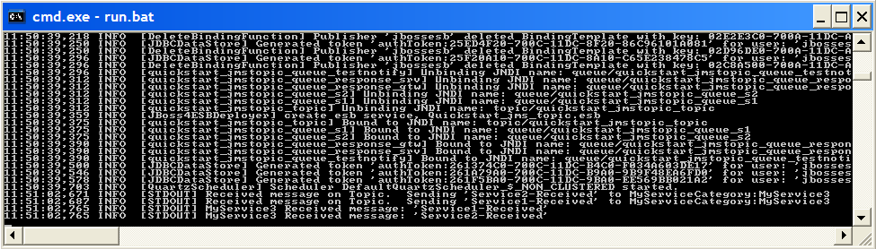
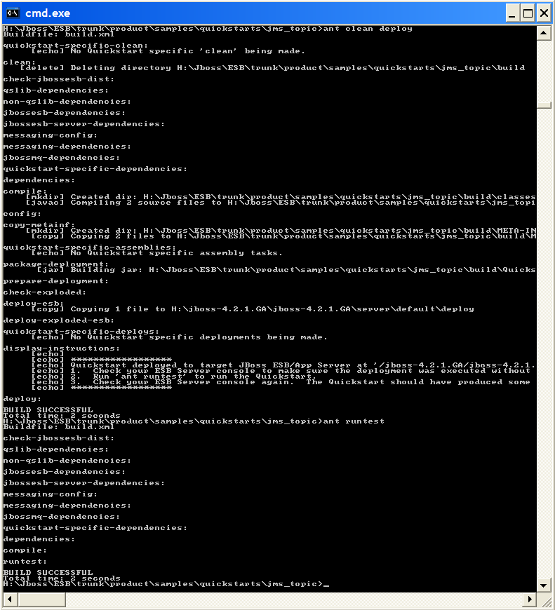

Overview
This sample demonstrates how to configure a pair of Services to receive a message
from the same JMS Topic via configurations of the <jms-listener> as a
"topic" based gateway.
This quickstart simply sends a message to a JMS topic, on which service "MyService1"
and "MyService2" are listening. Both of these services then send a message to
"MyService3".
- -> MyService1 -> - |
| |
-> - "quickstart-topic" -| |- - - MyService3
| |
- -> MyService2 -> - |
Prerequisits
Please refer to 'ant help-quickstarts' for prerequisites about the quickstarts
and a more detailed descripton of the different ways to run the quickstarts.
To Run
- In a command terminal window in this folder ("Window1"), type 'ant deploy'.
- Open another command terminal window in this folder ("Window2"), type
'ant runtest'.
- Check "Window1" and "Window2" for output.
- To undeploy, type 'ant undeploy' in "Window1".
"Window1" should contain ESB Server side logging from the quickstart. The last 4 logs are the
logs of interest, showing the message being "processed" by MyService1 and MyService2, which forward
the messages on to MyService3.

"Window2" should contain Client side logging from the quickstart.
